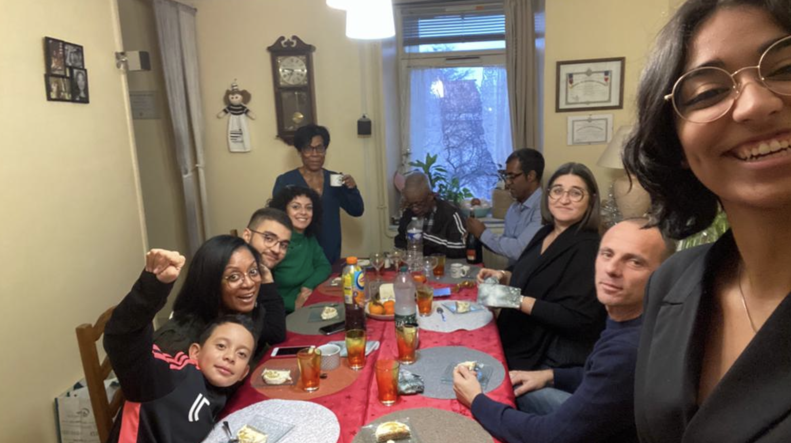
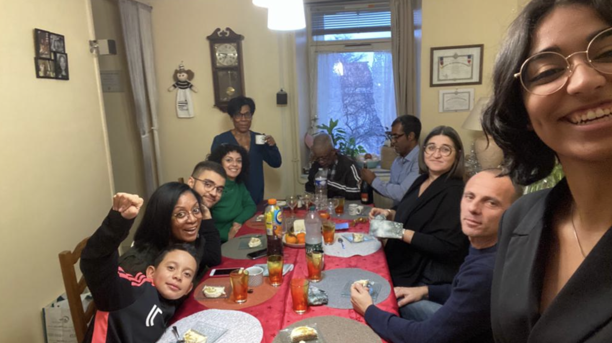

MY CONFLICTING FEELINGS ABOUT AMERICA, CITIZENSHIP, AND THE CONCEPT OF 'HOME'
I think I feel weird about this especially now, mid citizenship process,  I have lived in this country for 10 years
I have lived in this country for 10 years  now (as seen by my very recently expired green card).
now (as seen by my very recently expired green card). 
I feel weird finally doing it because for years my parents have been saying to do it, but I was stubborn and thought I'd leave before I would have to make the decision to. Now it's here and might as well I've been here long enough. It's interesting because my reasoning to get this done now is so that I have the option to leave and go back to France  whenever I want. It would just be easier to have that option, to leave or to come back at some point.
whenever I want. It would just be easier to have that option, to leave or to come back at some point.
In some ways, I feel so American. I watch football (go Eagles)  , I got my
license at 16, I don't have a detectable accent.
, I got my
license at 16, I don't have a detectable accent.
It was especially apparent when I received the citizenship question booklet, and they were all the easiest things. It's funny; Ive been in American History classes for years, i know a bunch of random shit, and this tiny 5 question test determines my 'knowledge of america.' I feel like everytime I do absorb 'Americanisms' I lose my Frenchness. I've never voted in France and I know more / pay attention to politics here even though I can't vote (yet).
I remember the exact day I realized my inner monologue  was in English. I cried. I felt like I lost something that I could never get back.
was in English. I cried. I felt like I lost something that I could never get back.
What's the worst is that while I don't have an accent in English anymore, I have an itsy bitsy tiny one when I speak French. When my cousin  told me this a few summers ago...
The Horror!!!!!! My god. It's such a small thing but it means a lot to me. I don't like forgetting French words. I don't like the Frenglish that me and my parents have adopted
told me this a few summers ago...
The Horror!!!!!! My god. It's such a small thing but it means a lot to me. I don't like forgetting French words. I don't like the Frenglish that me and my parents have adopted  I don’t like that I like hot dogs at baseball games and I don't like that I can't find a (go Eagles)
I don’t like that I like hot dogs at baseball games and I don't like that I can't find a (go Eagles)  in New York city.
in New York city.
Something that's been on my mind lately (or always? everyday?) Is the idea of home.  I think just looking with no emotional input the breakdown of where I've been these past 21 years points to somewhere.
I think just looking with no emotional input the breakdown of where I've been these past 21 years points to somewhere.
America. 
It's been 10 years. I lived in France for 4. and England for 5. Oh my god it has been more than 10 years fuck. Also during the citizenship process I had to recount the times I'd left the country  since 2018. I have been to France in the past 5 years for something like 40 days. I saw my family for a total of 6 WEEKS over the course of 5 YEARS. that hit really hard for me. That's why home. isn’t here. Only my mom and dad are here, everyone else is there.
since 2018. I have been to France in the past 5 years for something like 40 days. I saw my family for a total of 6 WEEKS over the course of 5 YEARS. that hit really hard for me. That's why home. isn’t here. Only my mom and dad are here, everyone else is there.
This year, we are spending Christmas there for the first time since I was six years old. 
6 weeks out of 364.
And even that feels weird, Because over the years of spending Christmas here with my mom and dad, we created our own routines and traditions.  So that's home. to me, too. Not doing these traditions doesn’t feel like my Christmas, but at the same time seeing family feels like Christmas,  so on and so forth forever. It’s conflicting, and I feel bad about it. There’s other reasons too like moving etc. but I don’t need to get into that here.
So that's home. to me, too. Not doing these traditions doesn’t feel like my Christmas, but at the same time seeing family feels like Christmas,  so on and so forth forever. It’s conflicting, and I feel bad about it. There’s other reasons too like moving etc. but I don’t need to get into that here.
Generally America is just. I don’t know. I do. I love it but I don’t but I do but I don’t but I do but I don’t. I think with the shooter thing in Lewiston and Barry being there I’m thinking about that too. It’s a tangent but not really because as horrible as it is that is American culture. Why would I ever want to be a part of something that’s ok with that? I don’t but I still do and it’s conflicting.